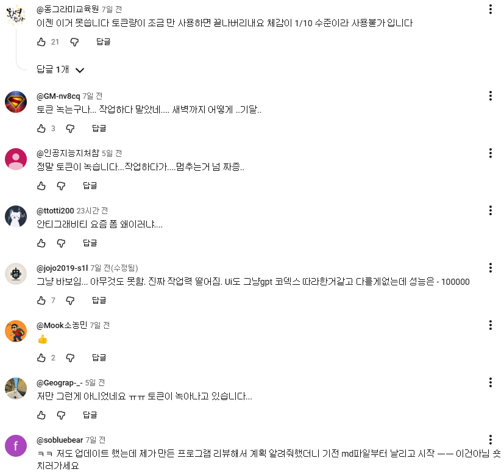

Obsidian
마크다운 형식의 텍스트 파일을 기반으로 작동하는 개인 지식 관리 및 노트 필기 소프트웨어입니다.
Obsidian 설치 ↗트렌드 리포트에서 주제를 뽑아 블로그 글을 쓰고, 이미지를 만들고, HTML과 카드뉴스로 재구성하기까지 — 오늘의 제작 흐름을 정리합니다.
항목을 눌러 각 단계에서 무엇을 하는지 확인해 보세요.
트렌드코리아 2025·2026 또는 가트너 IT 트렌드 2026을 토대로, 나의 관심 분야와 연결되는 블로그 주제를 뽑아봅니다.
마크다운 형식의 텍스트 파일을 기반으로 작동하는 개인 지식 관리 및 노트 필기 소프트웨어입니다.
Obsidian 설치 ↗Product > Antigravity IDE 설치 순서로 진행합니다.
Antigravity 설치 ↗
웹으로 보이는 화면은 기본적으로 다음 3개의 파일로 이루어집니다.
사용자에게 보여지는 화면을 front라고 하는데, front의 구조를 잡는 태그들이 있는 파일입니다.
사용자에게 보여지는 디자인을 적어놓은 파일입니다.
사용자에게 보여지는 동작을 구현해 놓은 파일입니다.
아래 프롬프트를 복사해서 키워드만 바꿔 사용해 보세요.
완성한 HTML을 네이버 블로그에 옮길 때 고려해야 할 우리의 요구사항입니다.